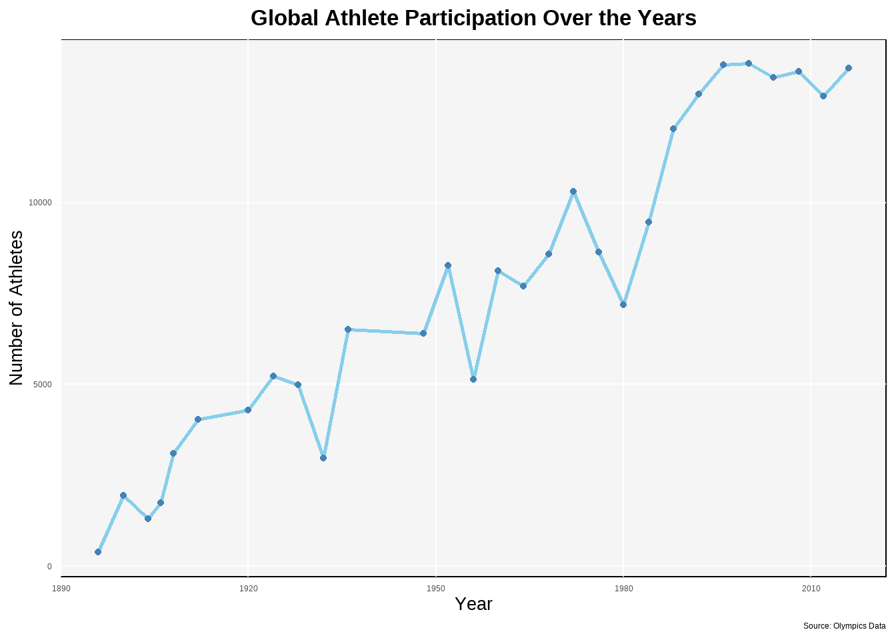

summer_data <- olympics |>
filter(season == "Summer")
athlete_year <- summer_data |>
group_by(year) |>
summarise(count = n())
plot1 <- ggplot(athlete_year, aes (x = year, y = count)) +
geom_line(color = "skyblue", size = 1) +
geom_point (color = "steelblue") +
labs(title = "Global Athlete Participation Over the Years",
x = "Year", y = "Number of Athletes",
caption = "Source: Olympics Data") +
theme_minimal() +
theme(plot.title = element_text(size = 25, face = "bold", hjust = 0.5),
axis.title.x = element_text(size = 20),
axis.title.y = element_text(size = 20),
panel.grid.minor = element_blank(),
panel.grid.major = element_line(color = "white"),
panel.background = element_rect(fill = "whitesmoke"),
plot.background = element_rect(fill = "white", color = NA))
plot1